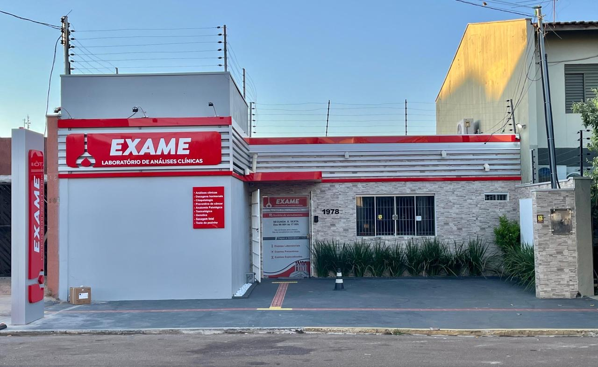
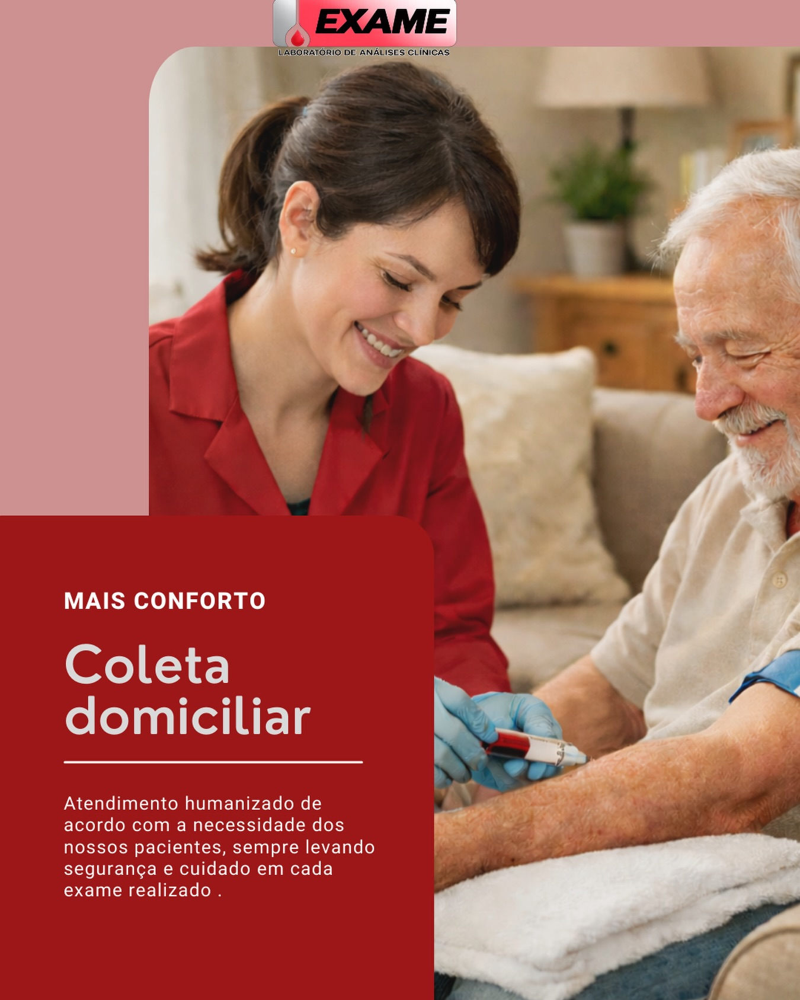

Há mais de 20 anos sendo a sua principal escolha em exames laboratoriais. Agilidade nos resultados, tecnologia de ponta e um atendimento acolhedor feito para você e sua família.

O Laboratório Exame atua há mais de 20 anos no segmento de análises clínicas, sendo referência em qualidade, confiança e precisão nos resultados em Rondonópolis e região.
Há 5 anos, sob nova direção, passamos por constantes melhorias, com fortes investimentos em tecnologia, agilidade nos processos e, principalmente, um atendimento cada vez mais humanizado.
Nosso diferencial está no cuidado com cada paciente, no acolhimento e na credibilidade construída ao longo dos anos. Trabalhamos com responsabilidade e compromisso com a sua saúde. Mais do que realizar exames, nosso propósito é contribuir para diagnósticos precisos e mais qualidade de vida.
Sabemos que o seu tempo é valioso e, muitas vezes, a locomoção pode ser difícil. Por isso, levamos a precisão e a segurança do Laboratório Exame até o conforto do seu lar ou trabalho.

Oferecemos uma ampla variedade de exames laboratoriais, desde rotinas básicas até genéticos e toxicológicos.
Hemogramas, glicemia, colesterol, lipidogramas e check-ups gerais para acompanhar sua saúde no dia a dia.
Exames complexos, testes de fertilidade, mapeamento genético e sexagem fetal com alta precisão.
Anatomia patológica, preventivos de câncer e testes essenciais, como o Teste do Pezinho.
Toxicológicos para empresas, concursos públicos e para sua habilitação, seja ela para renovação e troca de categorias ou até para legislação de 2 anos e meio.
O que nos torna a principal referência em análises clínicas de Rondonópolis e região.
Investimos constantemente em equipamentos de última geração para garantir a máxima precisão em diagnósticos complexos.
Tratamos cada paciente com o acolhimento e o respeito que ele merece. Nosso propósito é cuidar de pessoas.
Processos otimizados e uma equipe focada em entregar seus resultados no menor tempo possível, sem abrir mão da segurança.
Duas décadas de credibilidade construída com responsabilidade e resultados que médicos e pacientes confiam.
Venha nos visitar em nossa unidade moderna no Centro de Rondonópolis ou tire suas dúvidas rapidamente pelo nosso WhatsApp.